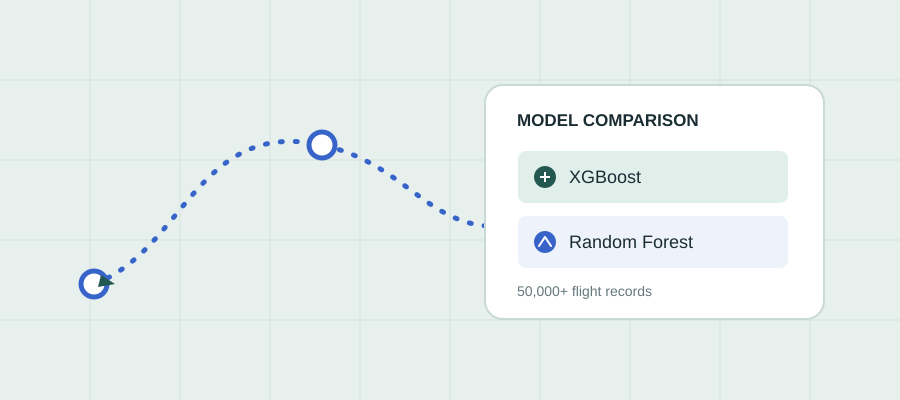
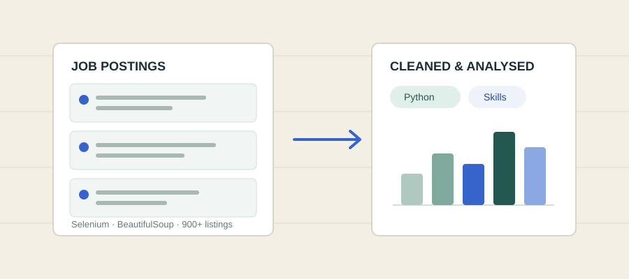
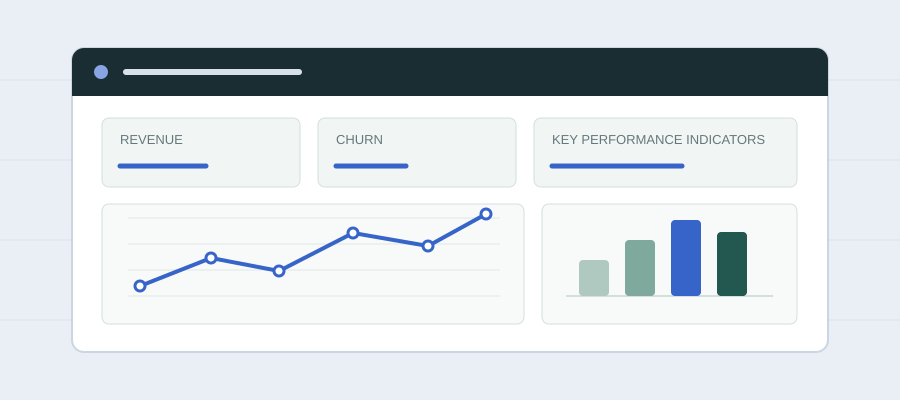

Projects
Selected work
A few projects I have worked on: preparing flight data for prediction, collecting and analysing job listings, and developing a Power BI dashboard. More code is on my GitHub profile.

Machine learning
Airline Arrival Delay Prediction
More than 50,000 flight records prepared and used to compare XGBoost and Random Forest models for arrival-delay prediction.
Project page →
Web scraping
Job Market Analysis using Web Scraping
A Python scraper collected 900+ job postings; the cleaned data was then analysed for common roles, skills, and locations.
Project page →
Business intelligence
Telecom Revenue and Profitability Dashboard
Data model, DAX measures, and an interactive Power BI dashboard for revenue, churn, KPIs, and profitability gaps.
Project page →